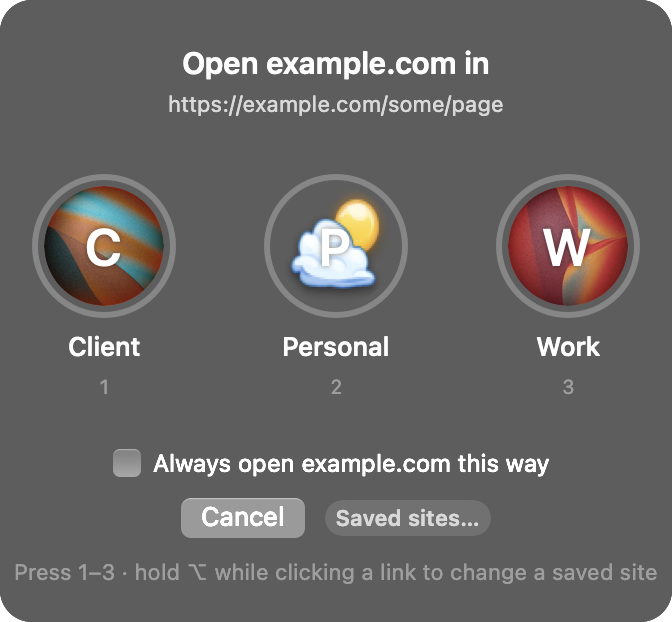

Every link opens in the right profile.
On a Mac, a link from Slack, WhatsApp or Mail opens in whichever browser profile happens to be in front. Your work doc lands in your personal account. Profiley sends each link to the profile it belongs to, and asks when it doesn't know.
Free and open source · macOS 12 or later · Chrome, Comet, Brave, Edge and Vivaldi

Pick once
A new site shows your profiles, with the same pictures as your browser. Click one or press 1, 2, 3. Tick "Always open this site this way" and it never asks again.
Your browser, your profiles
On install it picks up the browser you already use and the profiles in it. Nothing to configure, no rules to write.
Change your mind any time
Hold Option while clicking a link to get the popup anyway. Open Profiley from Spotlight to see and edit every saved site.